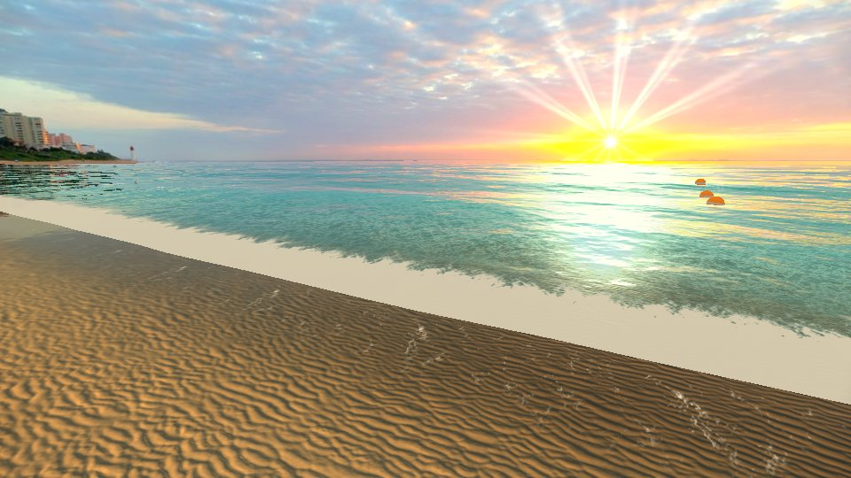
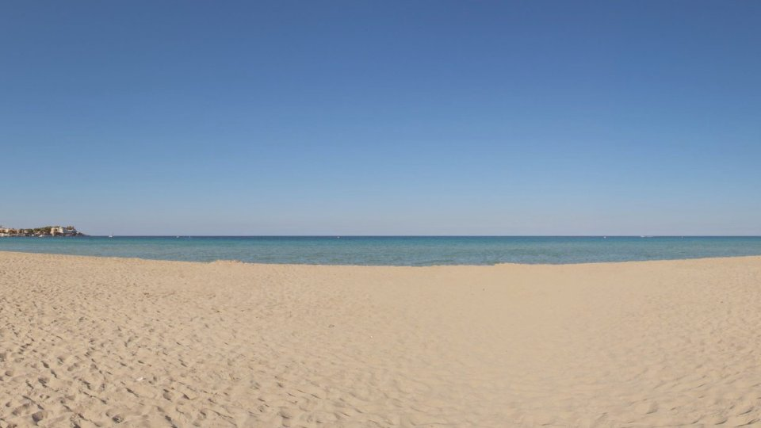

Consultório VR
Experiências em realidade virtual para uso no consultório, com a terapeuta presente. Abra no Chrome do celular, toque em “Modo óculos” e encaixe o celular no visor.

Mar Passo a Passo
Nascer do sol sobre o mar, em foto real. Caminhada guiada da areia até dentro do mar, desafio de 1 ou 2 minutos debaixo d’água com respiração guiada e, no fim, boiar olhando o céu.
Abrir experiência →
Praia Calma
Praia real fotografada em 360°, com coqueiros, sol e som do mar, narração e respiração guiada. Escala de ansiedade antes e depois.
Abrir experiência →Versão de teste. As notas ficam salvas só neste celular, e os avisos do Slack aparecem como exemplo, sem envio real.